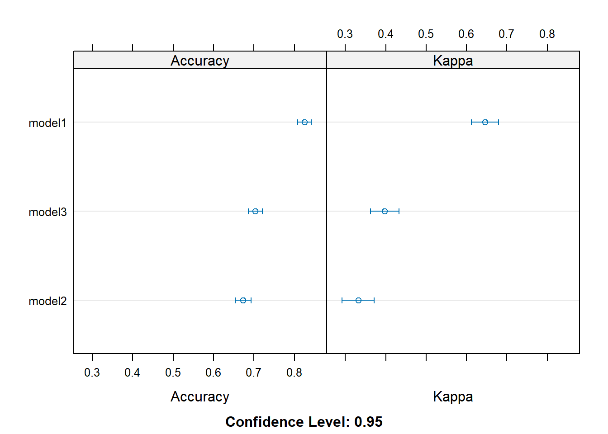

1. What is the purpose of using cross-validation when fitting a random forest model?> Cross-validation is used in random forests to choose the best tuning parameter, likethe number of trees. By dividing the data into k-folds, the model is trained on k-1 foldsand validated on the remaining fold. This process is repeated for each fold, and the performance is averaged. This helps ensure that the chosen parameter value allows the model to generalize well to new, unseen data, rather than just memorizing the training data.2. Describe the bagged tree algorithm.> Bagging, or Bootstrap Aggregating, is a way to improve the stability and accuracy of machine learning algorithms. For bagged trees, you take multiple samples from yourdata (with replacement) and build a decision tree for each sample. Then, you combine the predictions from all these trees. It's like asking multiple friends for their opinions before making a decision – you get a more balanced and reliable outcome.3. What is meant by a general linear model?> A general linear model is a statistical technique that models the relationship betweenone dependent variable and one or more independent variables. The model assumes that therelationship between the dependent variable and the independent variables is linear. Thisincludes models like for example simple linear regression or multiple linear regression.4. When fitting a multiple linear regression model, what does adding an interaction term do? That is, what does it allow the model to do differently as compared to when it is not included in the model?> Adding an interaction term lets your model capture the combined effect of two variableson the outcome, beyond their individual effects. It allows the model to consider that therelationship between variables isn't just additive but can be more complex.5. Why do we split our data into a training and test set?> Splitting your data into training and test sets helps you evaluate how well your modelwill perform on new data. The training set is for building the model, while the test setis like a final exam to see how well it learned. This way, you can check if your modelcan generalize well to new data and isn't just overfitting to the training data.
Task 2: Fitting Models
Read the data
# Load required packageslibrary(readr)library(httr)# Define the URLurl <-"https://www4.stat.ncsu.edu/~online/datasets/heart.csv"# Read the CSV file directly from the URLheart_data <-read_csv(url)
Rows: 918 Columns: 12
── Column specification ────────────────────────────────────────────────────────
Delimiter: ","
chr (5): Sex, ChestPainType, RestingECG, ExerciseAngina, ST_Slope
dbl (7): Age, RestingBP, Cholesterol, FastingBS, MaxHR, Oldpeak, HeartDisease
ℹ Use `spec()` to retrieve the full column specification for this data.
ℹ Specify the column types or set `show_col_types = FALSE` to quiet this message.
# View the first few rows of the datahead(heart_data)
# A tibble: 6 × 12
Age Sex ChestPainType RestingBP Cholesterol FastingBS RestingECG MaxHR
<dbl> <chr> <chr> <dbl> <dbl> <dbl> <chr> <dbl>
1 40 M ATA 140 289 0 Normal 172
2 49 F NAP 160 180 0 Normal 156
3 37 M ATA 130 283 0 ST 98
4 48 F ASY 138 214 0 Normal 108
5 54 M NAP 150 195 0 Normal 122
6 39 M NAP 120 339 0 Normal 170
# ℹ 4 more variables: ExerciseAngina <chr>, Oldpeak <dbl>, ST_Slope <chr>,
# HeartDisease <dbl>
Quick EDA/Data Preparation
# Load necessary librarieslibrary(caret)
Loading required package: ggplot2
Loading required package: lattice
Attaching package: 'caret'
The following object is masked from 'package:httr':
progress
library(ggplot2)# assign heart data to object datadata <- heart_data#Step 1: Quickly understand the data# Check for missingnesssummary(data)
Age Sex ChestPainType RestingBP
Min. :28.00 Length:918 Length:918 Min. : 0.0
1st Qu.:47.00 Class :character Class :character 1st Qu.:120.0
Median :54.00 Mode :character Mode :character Median :130.0
Mean :53.51 Mean :132.4
3rd Qu.:60.00 3rd Qu.:140.0
Max. :77.00 Max. :200.0
Cholesterol FastingBS RestingECG MaxHR
Min. : 0.0 Min. :0.0000 Length:918 Min. : 60.0
1st Qu.:173.2 1st Qu.:0.0000 Class :character 1st Qu.:120.0
Median :223.0 Median :0.0000 Mode :character Median :138.0
Mean :198.8 Mean :0.2331 Mean :136.8
3rd Qu.:267.0 3rd Qu.:0.0000 3rd Qu.:156.0
Max. :603.0 Max. :1.0000 Max. :202.0
ExerciseAngina Oldpeak ST_Slope HeartDisease
Length:918 Min. :-2.6000 Length:918 Min. :0.0000
Class :character 1st Qu.: 0.0000 Class :character 1st Qu.:0.0000
Mode :character Median : 0.6000 Mode :character Median :1.0000
Mean : 0.8874 Mean :0.5534
3rd Qu.: 1.5000 3rd Qu.:1.0000
Max. : 6.2000 Max. :1.0000
# Step 3: Create Dummy Variables for Categorical Predictors# Define var list for dummyVarsdummy_formula <-~ Sex + ExerciseAngina + ChestPainType + RestingECG# Create the dummyVars objectdummies <-dummyVars(dummy_formula, data = data)# Use predict to create new columnsdummy_data <-predict(dummies, newdata = data)# Convert to data frame and add to original datadummy_data <-as.data.frame(dummy_data)data <-cbind(data, dummy_data)# Drop original categorical columnsdata <- data[, !(names(data) %in%c("Sex", "ExerciseAngina", "ChestPainType", "RestingECG"))]str(data)
# Set a seed for reproducibilityset.seed(1234)# Create indices for the training settrainIndex <-createDataPartition(data$HeartDisease, p =0.7, list =FALSE)# Split the data into training and test setstrainData <- data[trainIndex, ]testData <- data[-trainIndex, ]# Check the dimensions of the splitsdim(trainData)
[1] 643 18
dim(testData)
[1] 275 18
kNN
trctrl <-trainControl(method ="repeatedcv", number =10, repeats =3)# Define the tuning gridtune_grid <-expand.grid(k =1:40)set.seed(1234)knn_fit <-train(HeartDiseaseFactor ~.,data = trainData, method ="knn",trControl=trctrl,preProcess =c("center", "scale"),tuneGrid = tune_grid)# Make predictions on the test setpredictions <-predict(knn_fit, newdata = testData)# Evaluate the modelknn_conf_matrix <-confusionMatrix(predictions, testData$HeartDiseaseFactor)print(knn_conf_matrix)
Confusion Matrix and Statistics
Reference
Prediction 0 1
0 96 32
1 27 120
Accuracy : 0.7855
95% CI : (0.7322, 0.8325)
No Information Rate : 0.5527
P-Value [Acc > NIR] : 6.355e-16
Kappa : 0.5678
Mcnemar's Test P-Value : 0.6025
Sensitivity : 0.7805
Specificity : 0.7895
Pos Pred Value : 0.7500
Neg Pred Value : 0.8163
Prevalence : 0.4473
Detection Rate : 0.3491
Detection Prevalence : 0.4655
Balanced Accuracy : 0.7850
'Positive' Class : 0
Logistic Regression
set.seed(1234)# Set up the train controltrain_control <-trainControl(method ="repeatedcv", number =10, repeats =3)# Model 1: All predictorsmodel1 <-train(HeartDiseaseFactor ~ ., data = trainData, method ="glm", family ="binomial",preProcess =c("center", "scale"),trControl = train_control)# Model 2: A subset of predictorsmodel2 <-train(HeartDiseaseFactor ~ Age + RestingBP + Cholesterol, data = trainData, method ="glm", family ="binomial",preProcess =c("center", "scale"),trControl = train_control)# Model 3: Another subset of predictorsmodel3 <-train(HeartDiseaseFactor ~ Age + RestingBP + Cholesterol + FastingBS + MaxHR, data = trainData, method ="glm", family ="binomial",preProcess =c("center", "scale"),trControl = train_control)# Compare modelsresults <-resamples(list(model1 = model1, model2 = model2, model3 = model3))summary(results)
Call:
summary.resamples(object = results)
Models: model1, model2, model3
Number of resamples: 30
Accuracy
Min. 1st Qu. Median Mean 3rd Qu. Max. NA's
model1 0.7384615 0.8000000 0.8153846 0.8250046 0.8663004 0.9047619 0
model2 0.5625000 0.6562500 0.6743990 0.6733145 0.7159856 0.7538462 0
model3 0.6250000 0.6783272 0.7054087 0.7034874 0.7187500 0.8593750 0
Kappa
Min. 1st Qu. Median Mean 3rd Qu. Max. NA's
model1 0.4760550 0.5959535 0.6276808 0.6453828 0.7259933 0.8085106 0
model2 0.1098901 0.3012033 0.3300777 0.3316064 0.4151451 0.4951456 0
model3 0.2258065 0.3498834 0.4039843 0.3974232 0.4235667 0.7170923 0
dotplot(results)

#From the summary, Model 1 consistently has higher values for both accuracy and kappa compared to Models 2 and 3. Specifically. Therefore, Model 1 is the best model based on these evaluation metrics.# Since model1 is the best modelpredictions <-predict(model1, newdata = testData)# Evaluate the best modellg_conf_matrix <-confusionMatrix(predictions, testData$HeartDiseaseFactor)print(lg_conf_matrix)
Confusion Matrix and Statistics
Reference
Prediction 0 1
0 95 24
1 28 128
Accuracy : 0.8109
95% CI : (0.7595, 0.8554)
No Information Rate : 0.5527
P-Value [Acc > NIR] : <2e-16
Kappa : 0.6164
Mcnemar's Test P-Value : 0.6774
Sensitivity : 0.7724
Specificity : 0.8421
Pos Pred Value : 0.7983
Neg Pred Value : 0.8205
Prevalence : 0.4473
Detection Rate : 0.3455
Detection Prevalence : 0.4327
Balanced Accuracy : 0.8072
'Positive' Class : 0
Tree models
library(rpart)library(randomForest)
randomForest 4.7-1.1
Type rfNews() to see new features/changes/bug fixes.
Attaching package: 'randomForest'
The following object is masked from 'package:ggplot2':
margin
library(gbm)
Loaded gbm 2.2.2
This version of gbm is no longer under development. Consider transitioning to gbm3, https://github.com/gbm-developers/gbm3
set.seed(1234)#Train classification tree modelctrl <-trainControl(method ="repeatedcv", number =10, repeats =3)grid_cp <-expand.grid(cp =seq(0, 0.1, by =0.001))rpart_model1 <-train(HeartDiseaseFactor ~ ., data = trainData, method ="rpart", trControl = ctrl, tuneGrid = grid_cp)print(rpart_model1)
#Train a random Forest Modelgrid_rf <-expand.grid(mtry =1:(ncol(trainData)-1))#this takes way too long to compute#rf_model1 <- train(HeartDiseaseFactor ~ ., data = trainData, # method = "rf", # trControl = ctrl, # tuneGrid = grid_rf)#print(rf_model1)library(tidyverse)
Random Forest
643 samples
4 predictor
2 classes: '0', '1'
No pre-processing
Resampling: Cross-Validated (10 fold, repeated 3 times)
Summary of sample sizes: 579, 579, 579, 579, 578, 580, ...
Resampling results across tuning parameters:
mtry Accuracy Kappa
1 0.7144259 0.4186904
2 0.7190808 0.4296139
3 0.7091915 0.4099162
4 0.7066116 0.4056595
Accuracy was used to select the optimal model using the largest value.
The final value used for the model was mtry = 2.
Stochastic Gradient Boosting
643 samples
17 predictor
2 classes: '0', '1'
No pre-processing
Resampling: Cross-Validated (10 fold, repeated 3 times)
Summary of sample sizes: 579, 578, 578, 578, 578, 580, ...
Resampling results across tuning parameters:
interaction.depth n.trees Accuracy Kappa
1 25 0.8066486 0.6073921
1 50 0.8237249 0.6429110
1 100 0.8414193 0.6794047
1 200 0.8477277 0.6922714
2 25 0.8232847 0.6408247
2 50 0.8393447 0.6744529
2 100 0.8404350 0.6768655
2 200 0.8384809 0.6732450
3 25 0.8279730 0.6510896
3 50 0.8419492 0.6796675
3 100 0.8455715 0.6870079
3 200 0.8300729 0.6554239
Tuning parameter 'shrinkage' was held constant at a value of 0.1
Tuning parameter 'n.minobsinnode' was held constant at a value of 10
Accuracy was used to select the optimal model using the largest value.
The final values used for the model were n.trees = 200, interaction.depth =
1, shrinkage = 0.1 and n.minobsinnode = 10.
Stochastic Gradient Boosting
643 samples
4 predictor
2 classes: '0', '1'
No pre-processing
Resampling: Cross-Validated (10 fold, repeated 3 times)
Summary of sample sizes: 579, 579, 578, 579, 579, 580, ...
Resampling results across tuning parameters:
interaction.depth n.trees Accuracy Kappa
1 25 0.7242752 0.4380593
1 50 0.7247955 0.4390402
1 100 0.7201804 0.4302571
1 200 0.7211809 0.4330727
2 25 0.7320391 0.4518432
2 50 0.7346680 0.4583598
2 100 0.7279127 0.4464591
2 200 0.7122940 0.4154406
3 25 0.7284007 0.4433571
3 50 0.7299395 0.4486524
3 100 0.7164849 0.4239004
3 200 0.6983757 0.3872855
Tuning parameter 'shrinkage' was held constant at a value of 0.1
Tuning parameter 'n.minobsinnode' was held constant at a value of 10
Accuracy was used to select the optimal model using the largest value.
The final values used for the model were n.trees = 50, interaction.depth =
2, shrinkage = 0.1 and n.minobsinnode = 10.